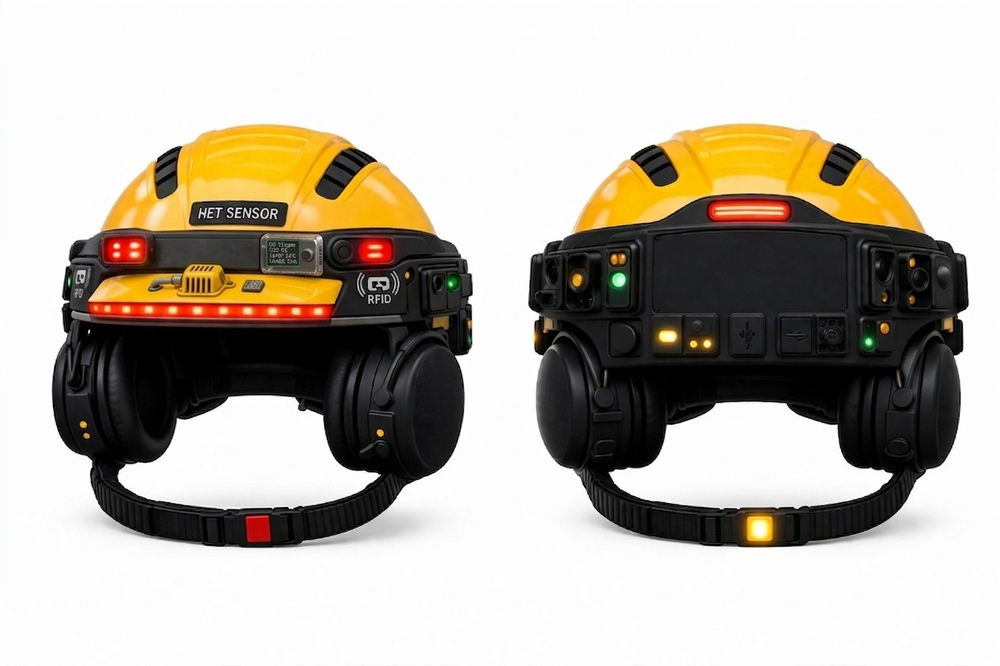
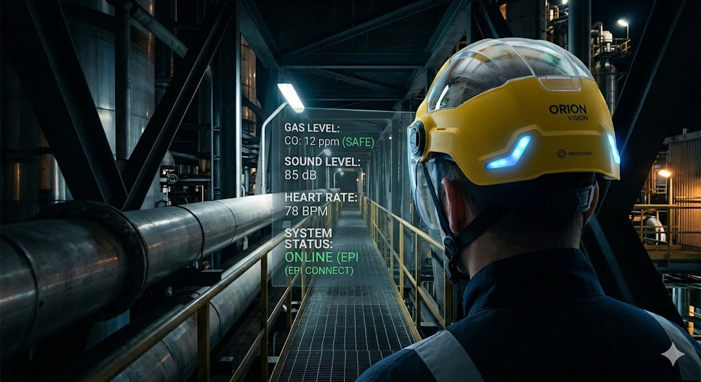
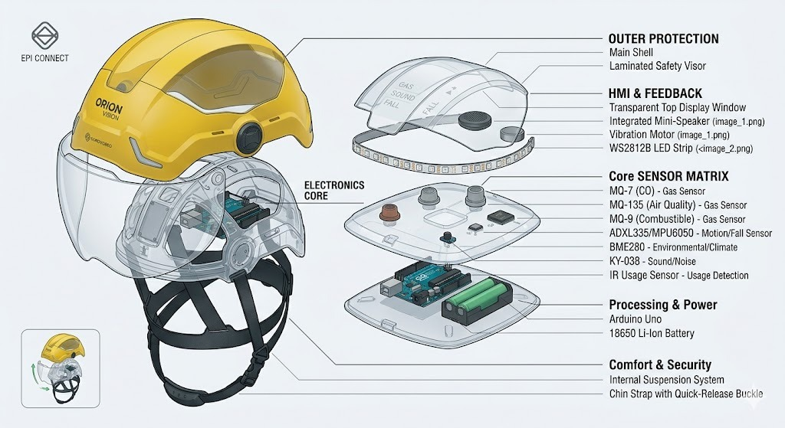
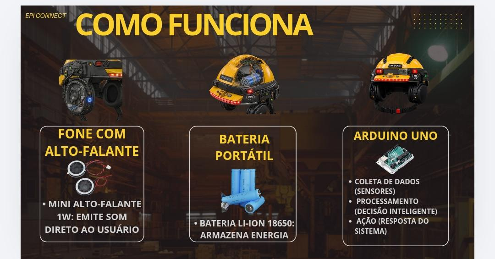
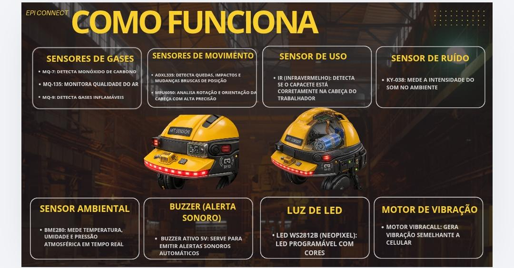
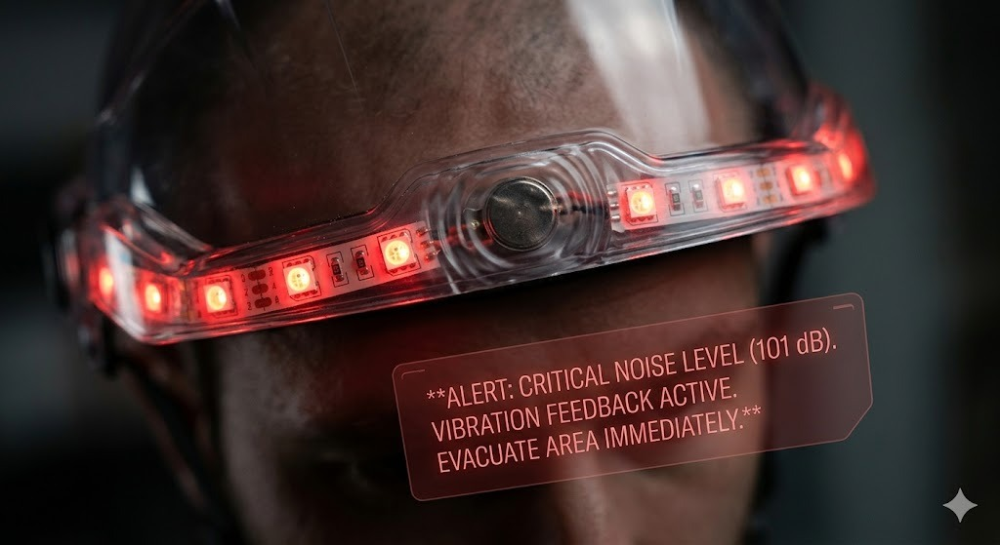
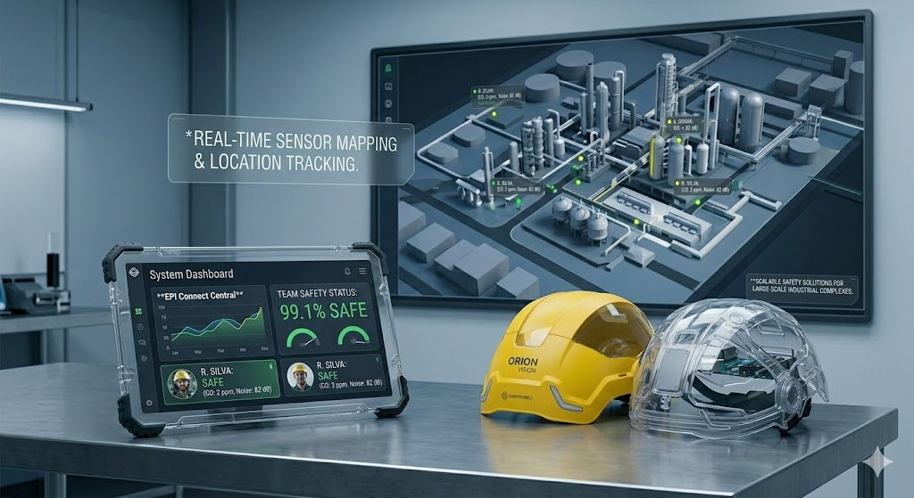

Não confie apenas nos instintos. Eleve-os.
A primeira linha de defesa ativa para indústrias de missão crítica. Mais do que um EPI, o Orion Vision é uma extensão sensorial do trabalhador, processando milhares de dados ambientais por segundo para antecipar o perigo antes que ele se torne um acidente.


No caos de uma refinaria ou na escuridão de uma mina, a carga cognitiva de um trabalhador atinge o limite. O Orion Vision introduz o conceito de telemetria passiva.
A interface HUD projeta dados de gases nocivos, ruído decibel e estabilidade estrutural na visão periférica. Não há necessidade de parar, olhar para monitores externos ou checar aparelhos nas mãos. O operador mantém as mãos livres e o foco intacto, enquanto a matriz de inteligência processa ameaças invisíveis a olho nu.
Cada milímetro quadrado foi desenhado para tolerância a falhas. A arquitetura descentralizada garante que o capacete funcione como um cérebro autônomo, não dependendo de Wi-Fi para salvar vidas.

Operado por um controlador Arduino modificado de latência ultra-baixa. O suprimento de energia conta com células Li-Ion 18650, entregando até 14 horas de operação contínua sob estresse computacional máximo.
Varredura química contínua (Sensores MQ-7/135/9 para Monóxido, Qualidade e Inflamáveis). O subsistema inercial (MPU6050 + ADXL335) mapeia vetores de impacto e quedas graves em 3 dimensões.
Moldado em polímero termoplástico de absorção cinética. A viseira laminada e o forro interno isolam a suíte eletrônica de detritos, água e calor extremo (Certificação IP67 em desenvolvimento).


Em um evento catastrófico, sirenes externas são abafadas pelo ruído da maquinaria e luzes de alerta são engolidas por fumaça. É nesse momento que o Orion Vision ativa o Protocolo de Bypass Sensorial.
Ao detectar um pico fatal de toxicidade ou um ruído ensurdecedor (>100dB), o capacete ignora a visão e a audição do trabalhador. Em milissegundos, motores hápticos de alta frequência injetam vibrações de alerta diretas no crânio. Uma resposta biológica de "lutar ou fugir" é forçada pelo equipamento, sincronizada com estroboscópios LED vermelhos (Neopixel WS2812B) e um Buzzer estridente na cavidade auricular.
/// SYS.INTERRUPT_CRITICAL
> EVENTO_ANALISADO: VAZAMENTO DE GÁS (MQ-9: TRIGGERED)
> OVERRIDE_SENSORIAL: VIBRAÇÃO CRANIANA [ATIVADA]
AÇÃO_REQUERIDA: ROTA DE FUGA IMEDIATA.

A verdadeira revolução não está em um único capacete, mas em uma frota deles. O módulo RFID e os transmissores IoT transformam cada Orion Vision em um nó de coleta de dados biométricos e estruturais.

Nossa plataforma proprietária unifica a telemetria da planta inteira. Gestores recebem um **Gêmeo Digital (Digital Twin)** da operação em 3D. Em vez de reagir a fatalidades, o software utiliza inteligência preditiva.
Desenvolvido para cenários onde a falha não é uma opção. O Orion Vision personaliza sua matriz de detecção para as demandas mais hostis do mercado industrial.
Em ambientes próximos aos altos-fornos, o risco térmico e a intoxicação silenciosa são fatais. O Orion Vision calibra seus sensores MQ para detectar fugas imperceptíveis de Monóxido de Carbono (CO) e mede a exaustão térmica (BME280) antes que o operador sofra um desmaio térmico ou contaminação severa.
Projetado para intervenções em espaços confinados e silos onde o oxigênio é imprevisível. Com a telemetria ativa, a sala de controle sabe exatamente o status vital do mantenedor em áreas isoladas. O design hands-free com alertas sonoros garante o diagnóstico seguro sem que o técnico precise soltar suas ferramentas.
Galpões e pátios logísticos operam com cargas suspensas constantes (pontes rolantes) e trabalho em altura (NR-35). Os acelerômetros giroscópicos detectam instantaneamente impactos anormais, vetores de queda livre e imobilidade do operário, despachando socorro automatizado via sistema central em acidentes com máquinas pesadas.
Em refinarias e túneis profundos, atmosferas explosivas são o inimigo número um. O sistema é programado para rastrear a propagação de gases combustíveis e metano. O alerta háptico vibratório se torna a única comunicação confiável quando o ruído das perfuratrizes ultrapassa o limite seguro da audição humana (120dB+).
Elimine acidentes de trabalho, reduza custos com passivos trabalhistas e otimize a produtividade da sua planta com pacotes escaláveis desenhados para a sua indústria.
Aquisição única do hardware militar.
O cérebro por trás da operação (SaaS).
Cores padrão, logomarca da sua empresa, ou configurações de sensores específicos para a sua planta industrial. Construímos o Orion Vision sob medida para sua necessidade.
Fale com um Especialista